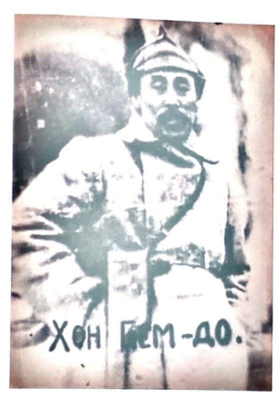
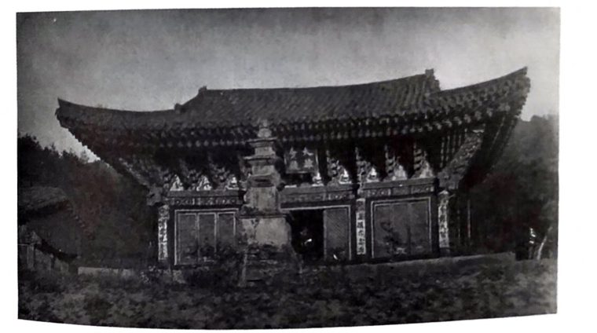
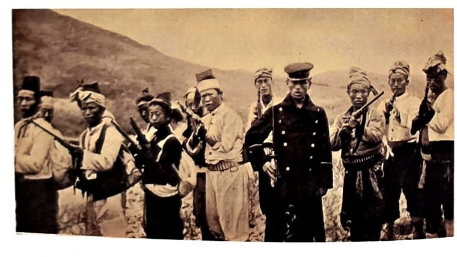
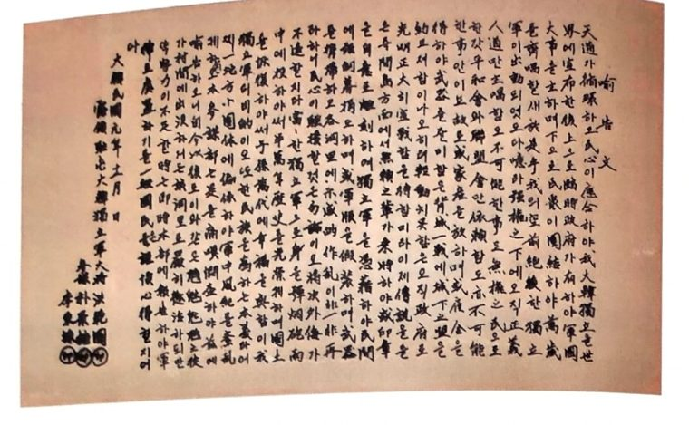
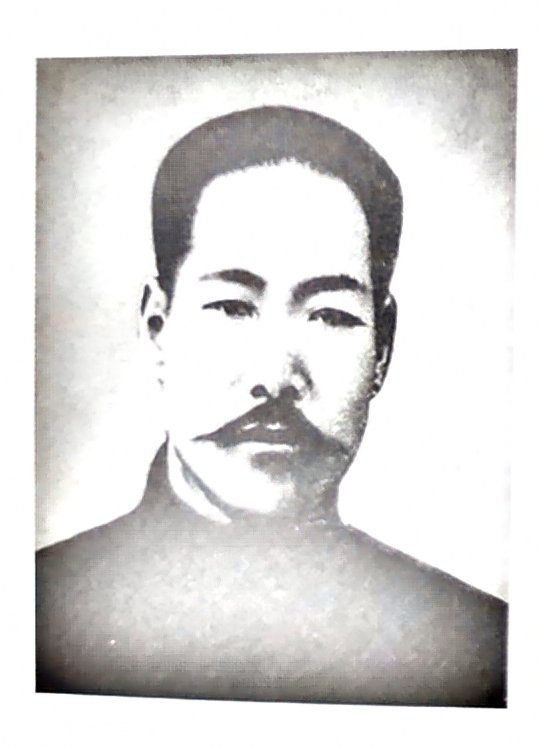

시험 한 장 요약
솔직한 가이드 — 이 시험을 어떻게 볼 것인가
1. 이 시험의 정체
문제 3개가 이미 공개돼 있고, 책은 한 장(6장, 29쪽)이다. 그러니까 이건 "논술 실력을 보는 시험"이 아니라 "준비한 답 3개를 45분 안에 원고지에 옮겨 쓰는 시험"이다. 준비만 하면 누구나 만점이 나올 수 있는 구조고, 준비 안 하면 아무리 글을 잘 써도 시간 안에 못 채운다. 문제가 공개된 시험에서 답을 미리 만들어 외워 가는 건 꼼수가 아니라 정답인 준비 방법이다.
2. 점수 구조 — 7점은 이미 네 것
| 문항 | 배점 | 기본점수 | 실제로 갈리는 점수 |
|---|---|---|---|
| 1번 주제+이유 | 7 | 3 | 4 |
| 2번 문장/장면+이유 | 7 | 3 | 4 |
| 3번 인생에 미친 영향 | 6 | 1 | 5 |
| 합 | 20 | 7 | 13 |
기본점수 7점은 뭐라도 쓰면 받는다. 승부는 13점이고, 그중 3번이 5점으로 가장 크다. 3번은 기본점수가 1점밖에 없어서 대충 쓰면 1~2점, 제대로 쓰면 6점 — 여기서 가장 많이 벌어진다.
3. 감점 함정 5개 (이것만 피하면 만점 근처)
- 분량 — 200자 미만, 300자 초과. 띄어쓰기 포함으로 센다. 목표는 260~290자. 원고지 한 줄이 20칸이면 13~14줄 반.
- 이유 없음 — 세 문항 다 "이유를 서술", "영향을 서술"이다. 사실만 나열하면 기본점수에서 끝난다. 답안의 절반은 "왜"여야 한다.
- 사실 오류 — 연도·이름·숫자 하나 틀리면 채점자는 "책을 제대로 안 읽었다"고 본다. 확실한 것만 쓴다. (1920년 6월 7일 · 700여 명 · 157명 · 1943년 · 2021년 8월 15일)
- 시대 범위 — 이 시험은 1910~1948년 책이어야 한다. 6장 앞부분(1907년 후치령)만으로 답을 채우면 위험하다. 답 어디에든 1919~1920년(대한독립군·봉오동)이 들어가게.
- 글씨 — "알아볼 수 있게"가 안내문에 명시돼 있다. 빨리 쓰려다 흘려 쓰면 내용이 좋아도 깎인다. 수정테이프는 써도 되니 틀리면 깨끗하게 고친다.
4. 45분 배분
| 시간 | 할 일 |
|---|---|
| 0~2분 | 세 문항 확인. 어느 방향으로 쓸지 머릿속에서 정함(이미 정해 놨으니 확인만) |
| 2~14분 | 3번부터 — 배점 차이가 가장 큰 문항을 머리가 맑을 때 |
| 14~26분 | 1번 |
| 26~38분 | 2번 |
| 38~45분 | 글자 수 세기(원고지 줄 수로), 연도·이름 재확인, 안 읽히는 글자 고치기 |
순서는 바꿔도 된다. 핵심은 초안을 따로 쓰고 옮길 시간은 없다는 것. 뼈대를 외운 채 원고지에 바로 쓴다.
5. 원고지 규칙
- 첫 칸은 비우고 시작한다(들여쓰기).
- 띄어쓰기도 한 칸, 마침표·쉼표·따옴표도 한 칸. 그래서 "띄어쓰기 포함 글자 수 = 칸 수".
- 줄 끝에서 마침표·쉼표가 올 때는 마지막 글자와 같은 칸에 넣어도 된다(다음 줄 첫 칸에 부호만 두지 않기).
- 숫자·영어는 한 칸에 두 글자까지 써도 된다(1920 → 두 칸).
- 문항마다 원고지가 따로 주어지므로 문항 번호를 답에 다시 쓰지 않는다.
6. 외우는 방법 (하루 10~20분 × 4일)
- 방향 고르기(일): 문항마다 예시 답안 2~3개를 읽고 하나씩 고른다(★). 마음에 안 드는 표현은 네 말로 바꾼다 — 바꾼 게 진짜 네 답이다.
- 뼈대 외우기(월): 답 하나 = 키워드 5개짜리 사슬. 사슬만 외우면 문장은 저절로 나온다. "뼈대 가리기"로 스스로 떠올려 본다.
- 손으로 한 번(화): 프린트 원고지에 타이머 40분 놓고 세 개를 다 써 본다. 어디서 막히는지 확인. 사진 찍어 아빠에게 보내면 첨삭이 돌아온다.
- 막힌 곳만 다시(수): 막힌 문항만 한 번 더 쓰고, 전날 점검 탭.
- 당일 아침(금): 뼈대 세 개만 훑기. 5분.
7. 시험장에서
- 준비물: 검정색 볼펜 2개, 수정테이프.
- 문항을 다시 읽고 "이유"를 요구하는지 확인 → 답안 뒷부분이 이유로 끝나게.
- 글자 수가 걱정되면 마지막 문장을 한 줄로 조절할 수 있게 짧은 마무리 문장을 준비해 둔다(각 예시 답안의 마지막 문장이 그 역할).
- 외운 문장이 안 떠오르면 뼈대의 다음 키워드로 건너뛴다. 순서가 맞고 이유가 있으면 점수는 그대로다.
8. 정직한 한마디
외운 답을 그대로 쓰는 건 부끄러운 일이 아니다. 문항이 공개된 시험에서 준비 안 하는 쪽이 손해다. 다만 답을 네 말로 한 번 고쳐 두면 외우기도 쉽고, 채점자도 "이 학생 글"이라고 느낀다. 그리고 이번에 읽은 홍범도 이야기는 시험이 끝나도 남는다 — 사냥꾼이 어떻게 총사령관이 됐는지 아는 사람은 생각보다 적다.
이번 주 일정 (총 3시간 안)
체크는 이 폰에만 저장된다.
읽기 전에 — 이 장의 지도
29쪽짜리 한 장을 여덟 토막으로 정리했다. 책의 소제목을 그대로 따랐고, 책에 실린 1차 자료 인용은 원문대로, 나머지는 읽기 쉽게 다시 썼다. 노란 띠가 시험 시대 범위(1910~1948)다.
- 평양 출생 · 머슴의 아들범위 밖(배경)
- 나이 속여 조선군 입대(생계) → 4년 뒤 탈영
- 제지소 → 금강산 신계사(글을 깨움)
- 함경남도 북청 사냥꾼 · 포수들의 대장
- 총포 및 화약류 단속법 → 산포수 의병 · 후치령 승리 · 60전 60승
- 아내 고문사 · 아들 홍양순 전사 → 연해주로책은 연도 대신 "아내와 아들을 잃은 그해"라고만 씀
- 경술국치 — 몸을 낮추고 기다림■ 시대 범위 시작
- 3·1운동 → 대한독립군 창설(51세) · 유고문
- 봉오동전투 — 대한북로독군부 700여 명, 유인·포위
- 청산리전투 — 완루구·어랑촌, 10전 10승 → 간도참변
- 러시아로 · 독립군 분열 · 농업협동조합 · 소련 공산당 입당
- 고려인 강제 이주 → 카자흐스탄
- 카자흐스탄에서 사망(75세) · 유언■ 시대 범위 끝 1948
- 유해 봉환 · 국립대전현충원범위 밖(후대)
0. 카자흐스탄에 홍범도 거리가 있는 이유209~210쪽
대한민국에서 5,000킬로미터나 떨어진 중앙아시아 북부, 카자흐스탄에는 우리나라의 한 장군을 기리는 거리와 동상, 추모공원이 있다. 홍범도 장군이다. 항일 무장투쟁을 이끈 독립군 대장이자 봉오동전투를 승리로 이끈 주역으로 우리에게 잘 알려져 있다.
그런데 책은 첫 쪽에서 뜻밖의 말을 한다. 홍범도는 처음부터 독립운동에 뜻이 있었던 사람이 아니다. 그의 원래 직업은 호랑이도 때려잡는 조선 말 최고의 사냥꾼이었다. 그래서 이 장은 두 개의 질문으로 시작한다. 사냥꾼의 총은 어떻게 일본군을 향하게 되었나? 그리고 카자흐스탄은 왜 그를 기리나?
1. 군인이 된 머슴의 아들, 불의에 저항하다210~213쪽
1868년 10월 12일, 평양의 한 가정집에서 홍범도가 태어났다. 태어난 지 7일 만에 어머니가 출산 후유증으로 세상을 떠났고, 머슴이던 아버지가 갓난아이를 안고 젖동냥을 다니며 키웠다. 아홉 살이 되던 해 아버지마저 죽자 홍범도는 아버지처럼 머슴살이를 하며 스스로 먹고살아야 했다.
"모친은 칠일 만에 죽고 아버지 품에서 여러분의 유즙을 얻어먹고 자랐다."《홍범도 일지》
열다섯 살 때 평양 관청에서 군인을 모집한다는 소식이 들렸다. 머슴보다는 군인이 낫겠다고 생각했지만 입대 가능 나이는 열일곱. 홍범도는 나이를 속여 평양 소속 조선군에 들어갔다. 책은 이 결정을 분명하게 짚는다 — "애국심 때문이 아닌 생계를 위한 선택"이었다.

그런데 그는 군대 체질이었다. 사격과 제식 훈련에서 실력이 뛰어났고, 키가 190센티미터 정도로 당시 조선 남성 평균(약 160센티미터)보다 훨씬 컸다. 눈에 띄는 병사였기에 한양 파견 근무까지 나갔다.
하지만 군 생활에 회의가 찾아왔다. 장교들의 가혹 행위가 있었고, 군인들이 농민 봉기를 진압하고 가난한 백성에게서 세금을 걷는 일에 투입되었다. 백성을 억압하는 데 한몫하는 군대의 부조리가 그를 괴롭혔다. 그러던 어느 날 홍범도는 병사들을 괴롭히는 양반 장교를 때려눕혔다. 머슴 출신이 양반 장교를 때린 하극상이었으니 무거운 처벌을 피할 수 없었다. 4년의 군 생활을 뒤로하고 그는 군대 밖으로 도망쳤다.
도망친 홍범도는 제지소에서 3년을 일했다. 그런데 오갈 데 없는 사정을 아는 주인이 임금도 제대로 주지 않고 그를 괴롭혔다. 결국 이번에도 부당한 대우를 참지 못하고 주인을 때려눕혔다. 조선총독부가 남긴 기록에 '홍범도의 성격은 호걸의 기풍이 있다'는 평가가 있을 정도로, 그는 도덕적이고 정의감이 있는 불같은 성격이었다.

스물두 살, 군대에 이어 제지소도 떠나야 했던 홍범도는 강원도 금강산의 절 신계사로 가서 스님에게 사정을 설명하고 머물게 해 달라고 간청했다. 절에서 잔심부름을 하며 글을 깨우치고 불교 경전을 배웠다. 머슴의 아들이 처음으로 글을 읽게 된 곳이다.
2. 호랑이를 겨누던 총구가 일제를 향하다214~219쪽
절 생활 1년 반이 되어 갈 무렵, 홍범도는 인근 사찰의 비구니였던 단양 이씨를 평생의 반려자로 맞고 아내의 고향 함경남도 북청군으로 갔다. 산악 지대로 둘러싸인 북청에는 곰과 멧돼지, 표범과 호랑이까지 살았다. 새 터전에서 먹고살 일로 그가 고른 직업이 사냥꾼이었다.
"땅! 총알이 병의 주둥이로 들어가서 바닥을 꿰뚫었다."홍상표, 《간도독립운동소사》
던져 올린 동전을 정확히 조준했다, 총알로 바늘귀를 뚫었다는 이야기가 전해질 정도로 사격 실력이 범상치 않았다. 홍범도는 호랑이 잡는 사냥꾼으로 유명해졌고, 포수들은 너나없이 그와 조를 이뤄 사냥에 나가려 했다. 얼마 뒤 그는 북청군 일대 포수들의 대장이 되었다. 한 집안의 가장으로서 이제 먹고사는 걱정 없이 가족을 책임질 수 있었다.
평온한 일상을 뒤흔든 것은 1907년이었다. 일제가 광무황제를 강제로 물러나게 하고 대한제국 군대를 해산시키자 전국에서 의병이 일어났다(정미의병). 일본은 '총포 및 화약류 단속법'을 만들어 조선인이 가진 총과 탄약을 압수하고, 거부하는 사람을 처벌했다. 책은 이렇게 비유한다 — 사냥꾼에게서 총을 뺏어 가는 것은 농사꾼에게서 곡괭이를 뺏는 것과 같았다. 홍범도에게 총 압수는 그 자체로 생계의 위협이었고, 이제 일본은 가족의 생계를 위협하는 '적'이 되었다.

"총을 빼앗겨 굶어 죽느니, 놈들과 싸웁시다!"총 압수 소식을 들은 홍범도의 말 (책 217쪽)
홍범도는 동료 포수들을 설득해 70여 명의 산포수 의병부대를 만들었다. 책의 표현을 빌리면 "호랑이에게 겨누던 총구를 일본군에게 돌린 순간"이다. 그해 11월 중순, 부대는 후치령에 매복했다. "탕! 탕! 탕!" 세 발의 총소리에 일본군 두 명과 순사 한 명이 쓰러졌다. 그들은 조선 포수들의 총을 빼앗아 돌아가던 길이었다. 홍범도 부대는 동료의 총을 되찾은 것은 물론 일본군의 신식 무기와 장비까지 손에 넣었다.
소식을 들은 일본군 수비대 60여 명이 후치령으로 다가왔다. 신식 무기로 무장한 다수의 일본군과 처음 맞서는 순간이었다. 다음 날 정오, "모두 사격하라!" 홍범도의 우렁찬 목소리와 함께 세 시간의 격전이 벌어졌고, 산악 지형에 익숙한 산포수들을 당해 내지 못한 일본군은 30여 명의 사상자를 내고 도망쳤다. 완벽한 승리였다.
승리 소식이 퍼지자 포수와 농민, 해산된 군인들이 홍범도를 찾아와 합류했다. 70여 명이 300여 명이 되었고, 함경도 일대에서 약 1년 동안 60전 60승의 신화를 썼다. 일본군은 동에 번쩍 서에 번쩍하는 그를 두려워하며 '날으는 홍범도'라고 불렀다.
3. 일제의 손에 가족을 잃다219~222쪽
연전연승의 신화를 써 가던 때, 그의 삶을 송두리째 뒤흔든 사건이 일어났다. 일제가 홍범도의 아내와 두 아들을 납치한 것이다. 일제는 아내에게 "홍범도가 투항하면 죄를 묻지 않고 일왕이 벼슬을 내릴 것"이라며 남편을 회유하는 편지를 쓰라고 강요했다. 쓰지 않으면 아내와 아들을 죽여 그 시체로 어육을 만들겠다고 협박했다.
아내는 어떤 고문과 회유, 협박에도 넘어가지 않았다. 그리고 마지막에는 자신의 혀를 깨물어 스스로 아무 말도 할 수 없게 만들었다. 건강이 위태로워지자 일제는 책임을 지기 싫어 그를 풀어 주었지만, 얼마 지나지 않아 아내는 고문 후유증으로 숨을 거두었다.
일제는 이번에는 큰아들 홍양순을 내세웠다. 귀순을 청하는 편지를 아들에게 들려 아버지를 찾아가게 한 것이다. 편지를 들고 온 아들에게 홍범도는 이렇게 말했다.
"이놈아, 네가 이전까지는 내 자식이었지만, 일본 감옥에 갇혀 있더니 그놈들의 말을 듣고 나에게 해를 주고자 한다. 너부터 쏴 죽여야겠다!"
"탕!"책 220~221쪽
총소리에 놀라 달려온 대원들이 본 것은 바닥에 떨어진 홍양순의 귓불이었다. 백발백중의 명사수가 아들을 죽이려 했던 것이 아니다. 책은 이렇게 해석한다 — 홍범도는 자신의 의지를 아들에게 분명히 보여 주어야 한다고 판단했을 것이다. 아들에게 총구를 겨누면서까지 일제의 회유를 거부한 그의 참혹한 심정은 짐작하기 어렵다. 충격을 받은 홍양순은 아버지의 뜻을 깨닫고 이후 함께 항일 무장투쟁에 나섰다. 그리고 얼마 뒤 일본과의 전투에서 목숨을 잃었다. 불과 몇 개월 사이에 아내와 아들을 잃은 것이다.
"그때 양순은 중대장이었다. 5월 18일 12시에 내 아들 양순이 죽었다."《홍범도 일지》
여기서 책은 이 장의 가장 중요한 해석을 내놓는다. 생계를 위해 의병을 시작한 홍범도는 가족이 희생되는 과정을 겪으며 일본을 같은 하늘을 이고 살 수 없는 원수로 여기게 되었고, 비로소 민족의식을 키워 나갔다. 자신이 겪은 비극이 의병 동료, 나아가 우리 민족 전체가 겪게 될 아픔이라고 생각한 것이다. "비극적인 가족의 희생을 사적인 복수심으로 해소하지 않고 항일 정신을 끌어올리는 계기로 삼은 것"이었다.
그러나 일제가 총과 탄약을 모조리 압수하며 의병 탄압에 열을 올리자 더 싸우기 어려운 상황이 되었다. 아내와 아들을 잃은 그해, 홍범도는 압록강을 건너 한반도 북부와 만주를 거쳐 러시아 연해주로 향했다. 연해주에서도 활동은 쉽지 않았다. 러일전쟁에서 패한 러시아가 일본과의 마찰을 피하려 항일 무장 세력을 감시했고, 이어 1910년 조국이 일본에 국권을 빼앗겼다는 경술국치 소식이 들려왔다. 홍범도는 호랑이를 사냥하던 때처럼 몸을 낮추고 기회를 기다리기로 했다. 연해주와 만주를 오가며 동지를 만나 군자금을 벌고 농사로 생계를 이었다.
4. 다시 일제를 향해 총구를 겨누다223~226쪽
약 10년이 흐른 1919년, 기다리던 기회가 왔다. 3·1운동이다. 국내의 저항이 불붙자 연해주와 만주의 의병들도 무장투쟁을 위해 일어섰다. 홍범도는 뒤에 대한민국 임시정부 초대 국무총리가 되는 이동휘와 손을 잡고 독립전쟁의 큰 그림을 그렸다. 연해주에 모인 의병들을 군대 조직으로 재편해 대한독립군을 창설하고, 북간도에 도착해 이 글을 선포했다.
"당당한 독립군으로 몸을 포연탄우 중에 던져 반만년 역사를 광영케 하며 국토를 회복하여 자손만대에 행복을 주는 것이 우리 독립군의 목적이오, 또한 민족을 위하는 본의라."〈대한독립군 유고문〉

쉰이 넘은 나이에, 그동안 준비한 모든 자원을 모아 최전선에 나선 것이다. 책의 문장으로는 "10년의 기다림 끝에 그의 총구가 다시 일제를 향했다."
홍범도는 대한독립군 300여 명을 이끌고 연해주를 떠나 북간도에 자리를 잡았다. 왜 북간도였을까. 당시 북간도 인구 가운데 75퍼센트, 25만 명이 조선인이었고, 일본의 직접 통치 아래 있는 '식민지 조선'이 아니어서 식량과 병력을 보급받기 좋았다. 광복단, 의군단, 북로군정서 같은 독립군 단체들도 이곳에서 만들어지고 있었다.
여기서 홍범도는 한 가지 비범한 생각을 한다. '독립군에게는 하나의 큰 군대가 필요하다.' 흩어진 단체들을 하나로 묶기 위해 힘쓴 끝에 6개 독립운동 단체 간부들과 협력을 약속했고, 700여 명 규모의 연합부대 '대한북로독군부'가 만들어졌다. 총지휘는 홍범도가 맡았다. 근거지는 두만강에서 12킬로미터 떨어진 봉오동. 삿갓을 뒤집어 놓은 모양으로 들어가는 입구가 하나이고 산으로 둘러싸여 있어, 군대를 모으기 좋고 방어하기 쉬운 요새였다.
사실 홍범도는 연합 전부터 함경북도에서 7개월간 여러 차례 게릴라 작전을 펼쳐 일본군에 피해를 주고 있었다. 화가 머리끝까지 난 일본군 부대 '월강추격대대' — 300여 명의 정예부대 — 가 중국에 아무런 통고도 없이 두만강을 건너 독립군을 쫓아왔다. 명백한 주권 침해였지만, 독립군을 얕본 일본군은 빨리 해치우고 돌아갈 수 있다고 여겼다. 이것은 중앙의 지시가 아닌 함경도 현지 부대의 판단이었다.
5. 또다시 격돌한 독립군과 일본군 — 봉오동전투226~229쪽
1920년 6월 7일 새벽 6시경, 연합 독립군은 봉오동 입구로 들어오는 일본군을 보고 몇 발 쏜 뒤 부리나케 도망쳤다. 일본군은 그 뒤를 바짝 쫓았다. 독립군이 정예부대에 겁을 먹은 것일까. 일본군이 봉오동 깊은 골짜기 한가운데로 들어선 순간, 홍범도가 외쳤다.
"전군 사격하라!"책 227쪽
도망은 유인이었다. 골짜기 위에서 포위한 독립군이 무차별 사격을 시작했고, 사방에서 날아드는 총탄에 월강추격대대는 혼비백산했다. 정신을 차린 일본군은 기관총으로 견제 사격을 하며 도망치려 했지만 그것이 고작이었다.
오후 4시 20분경 이상한 일이 벌어졌다. 갑자기 하늘이 어두워지고 천둥 번개가 치더니 비와 우박이 거세게 쏟아졌다. 일본군은 이때다 싶어 소강 상태를 틈타 도망치기 시작했다. 그런데 두 방향으로 갈라져 도망치던 일본군이 다른 길로 후퇴하던 아군과 마주치자, 급히 도망치던 데다 폭우와 우거진 숲 때문에 적과 아군을 구별하지 못하고 서로를 독립군으로 착각해 공격했다. "독립군이다! 독립군이 매복해 있다!" 북간도 독립군 정도는 단번에 소탕하겠다고 큰소리치던 월강추격대대가 홍범도의 유인과 매복 전략에 완전히 당한 것이다.
"독립군 승첩! 봉오동에서 적을 대파"〈독립신문〉 1920년 6월 22일
〈독립신문〉은 적군의 사망자 157명, 중상자 200여 명, 경상자 100여 명, 아군은 사망 장교 1인·병사 3인, 중상 2인이라고 전했다. '대파'라고 부를 만한 전적이었다. 쉰이 넘은 나이에 연합 독립군을 지휘해 이긴 홍범도는 명실공히 독립군의 영웅으로 우뚝 섰다.
6. 청산리전투 — 완루구와 어랑촌229~233쪽
봉오동에서 참패한 일본군은 4개월 뒤 장총과 기관총, 대포까지 갖춘 2만여 명을 북간도로 진격시켰다. 이번엔 현지 부대가 아니라 중앙 정부가 작정하고 나선 총공세였고, 독립군뿐 아니라 조선인을 모두 쓸어 버리겠다는 것이었다.
"백두산은 우리에게 아주 익숙한 지역이다. 조국 땅과 더 가까이 가서 조선인들로부터 도움을 받으며 전투를 준비하자!"홍범도 (책 229쪽)
홍범도는 근거지를 봉오동에서 한반도에 더 가까운 백두산으로 옮기기로 했다. 오히려 국경 지대로 가서 제대로 싸우려는 것이었다. 일본군이 이를 알아채고 추격했고, 쫓고 쫓기던 상황에서 홍범도가 우렁차게 외쳤다. "모두 여기서 멈춰라!" 이동 중에 따라잡히면 독립군에게 불리하다고 판단한 것이다. 그가 멈춰 선 곳이 바로 청산리였다.
책은 여기서 우리가 배운 상식을 살짝 흔든다. '홍범도 하면 봉오동, 김좌진 하면 청산리'로 외우지만, 청산리에서 김좌진 못지않게 홍범도도 활약했다는 사실은 잘 알려지지 않았다는 것이다.
"청산리 일대가 '은세계'로 바뀌어 군사행동이 곤란할 정도였다."홍상표, 《간도독립운동소사》
청산리는 북쪽 산악 지대라 10월에도 이미 한겨울이었다. 독립군이 가진 겨울옷은 솜바지 하나, 짚신 하나. 이런 악조건과 압도적인 병력 차이에도 홍범도 부대는 매복하기 좋은 산 정상으로 올라갔다.
1920년 10월 21일 오후, 일본군은 두 무리로 나뉘어 산의 남쪽과 북쪽에서 정상의 홍범도 부대를 노리고 포위망을 좁혀 올라갔다. 정상에 도착한 일본군은 무차별 총격을 가했다. "사격 개시! 독립군을 소탕하라!" 그런데 쓰러지는 것은 독립군이 아니라 일본군이었다. 홍범도 부대는 정상으로 이동하는 척하면서 산기슭을 통해 몰래 빠져나간 뒤였고, 이를 몰랐던 일본군은 정상에서 마주친 아군을 홍범도 부대로 착각해 서로 총구를 겨눈 것이다. 이것이 완루구전투다.
다음 날, 다른 매복 장소를 찾아 이동하던 홍범도 부대는 일본군과 싸우고 있는 김좌진 부대를 목격했다. 홍범도 부대는 전투에 한창인 일본군 뒤로 은밀히 다가가 맹사격을 퍼부었다. "또 다른 독립군 부대다! 협공이다!" 전열이 흐트러진 일본군은 해가 지자 후퇴했다. 두 독립 영웅이 협력해 승리한 이 싸움이 어랑촌전투다.

청산리 일대에서 6일 동안 10여 번의 전투가 벌어졌고 독립군은 10전 10승, 완승을 기록했다. 이 10여 번의 전투를 통틀어 '청산리전투'라고 한다. 책은 잊어서는 안 될 승리의 주역들도 소개한다. 〈독립신문〉은 그 지방 부인들이 애국하는 마음으로 음식을 준비해 총알이 빗발치는 전선까지 가서 지친 군인들을 위로했다고 전한다. 무기를 조달한 사람, 식량과 옷을 보탠 사람, 일본군 동향을 알리고 거짓 정보를 흘린 사람, 군용 전화선을 끊어 일본군 소통을 늦춘 사람 — 물심양면으로 독립군을 도운 수많은 영웅 덕분의 승리였다.
7. 간도참변 후 러시아로 향하다233~237쪽
연달아 큰 승리를 거두자 조선인들은 나라를 곧 되찾을지도 모른다는 희망에 부풀었다. 그러나 얼마 지나지 않아 참담한 일이 벌어졌다. 독립군을 섬멸하지 못한 일본군 2만여 명이 칼날을 북간도의 조선 민간인에게 돌린 것이다. 마을을 습격해 남자들을 한자리에 모아 죽이고, 부녀자를 겁탈하고 살해했다. 습격한 마을을 다시 찾아가 유족들에게 무덤을 파헤쳐 시체를 모으라고 강요한 뒤 석유를 붓고 불태웠다. 조선인 수천 명이 학살당한 이 사건이 간도참변이다.
"이미 죽여 버린 시체를 촌인을 시켜 한곳에 모아놓고 불을 질러 재로 만들어 버렸다."선교사 푸트의 수기
책은 이것이 패배에 대한 보복 심리만이 아니라 독립운동 세력이 다시 일어서지 못하도록 기반을 무너뜨리려는 의도가 담긴, 명백한 계획에 따른 집단 학살 — '제노사이드'였다고 규정한다.
홍범도는 당장이라도 북간도로 달려가 싸우고 싶었을 것이다. 그러나 대원들은 너무 지쳤고 탄약과 무기도 부족했다. 근거지를 잃은 그는 새 길을 찾아 러시아 모스크바로 향했다. 당시 러시아는 일본군이 개입한 내전을 치르고 있었으니, 일본군과 싸우는 러시아에 힘을 보태면 무기와 원조를 받을 수 있고, 러시아 내전에 참전한 다른 독립군과 연합해 더 강한 부대를 만들어 새 독립전쟁을 벌일 수도 있다고 기대했다. 그러나 러시아는 홍범도와 독립군을 지원하지 않았다. 심지어 이곳에서 독립군은 분열하고 흩어졌다.
모든 것을 잃은 홍범도는 그래도 포기하지 않았다. 소련이 된 러시아에 남아, 얼마 남지 않은 독립군과 농업협동조합을 만들어 농사로 생활을 안정시키면서 군자금을 모으려 했다. 러시아 조선인 사회의 정신적 지주로서 스스로 자기 역할을 찾아 나선 것이다. 그러나 시간이 흐르며 그는 일제가 지배하는 조선으로도, 기반을 잃은 북간도로도 돌아갈 수 없는 처지라는 현실을 깨달았다. 이때 홍범도가 택한 방법이 '소련 공산당 입당'이었다. 책은 그 이유를 이렇게 설명한다 — 당원이 되면 신변이 보호되고 동포들도 더 잘 지켜 낼 수 있을 것이라고 판단했다. 체제가 잡히지 않아 어지러운 소련에서 소수민족 한인을 억압하고 음해하는 일이 종종 있던 때라, 홍범도가 한인들의 보호막 역할을 자처한 것이었다.
그렇게 러시아에서 16년이 흘렀을 때 청천벽력 같은 소식이 들려왔다. "고려인들은 모두 짐을 싸서 기차에 탑승하시오!" 1937년, 일제가 중국을 침략하자 소련은 자신들도 공격받을 것을 염려하며 '고려인이 일본인과 닮아서' 일본 첩자가 있을 수 있다는 황당한 이유를 내세워 고려인을 먼 곳으로 강제 이주시켰다. 10년 넘게 일군 터전을 떠나 어디로 가는지도 모르는 기차에 오른 고려인이 17만여 명, 그중에 홍범도도 있었다. 블라디보스토크에서 출발한 기차가 40여 일을 달려 도착한 곳 — 바로 첫 쪽에 나온, 홍범도를 기리는 거리와 공원이 있다는 카자흐스탄이었다.
"홍범도 동무를 곡하노라. 홍범도 동무는 여러 달 동안 숙환으로 집에서 신음하시다가 그만 75세를 일기로 하시고 1943년 10월 25일에 세상을 떠나시었다."카자흐스탄 고려인 신문 부고
강제 이주 6년 뒤, 광복을 2년 남긴 1943년, 홍범도는 일제가 패망하는 모습을 보지 못한 채 이역만리 카자흐스탄에서 파란만장한 생을 마감했다. 죽기 전 한 가지 유언을 남겼다고 한다.
"내가 죽고 우리나라가 해방된다면 꼭 나를 조국에 데려다 주시오."홍범도의 유언 (책 236~237쪽)
이 간절한 염원은 이루어졌을까. 2021년 8월 15일, 홍범도가 사망한 지 78년 만에 유해가 고국으로 돌아와 국립대전현충원에 안장되었다.
책은 이렇게 끝난다. 홍범도는 유고문에서 '자손만대에 행복을 주는 것이 우리 독립군의 목적'이라고 했다. 그 자손이 바로 우리다. 나라를 지키고 되찾기 위해 나라를 떠나 떠돌 수밖에 없었던 홍범도 장군과 수많은 독립운동가의 노고 덕분에 오늘 우리는 낯선 땅이 아닌 우리나라에서 잘 살아갈 수 있다. 이름 하나 남기지 못한 이들을 포함해 수많은 독립 영웅으로부터 '자주독립국에 사는 행복'이라는 선물을 받은 우리는, 역사에 무임승차하지 않고 당당히 살아갈 방법을 고민해야 한다.
⚠️ 교과서에는 있지만 이 책에는 없는 것
답안은 "책을 읽고" 쓰는 것이므로, 아래 내용은 사실이더라도 답안에 쓰지 않는다. 채점자가 "책에 없는 얘기"라고 볼 수 있다.
| 교과서·상식 | 이 책에서는 |
|---|---|
| 자유시 참변(1921) | 이름 없이 "러시아는 지원하지 않았고 독립군은 분열하고 흩어졌다"만 |
| 레닌이 준 권총 | 사진 설명에 "권총집으로 추정되는 것"만 |
| 카자흐스탄 고려극장 수위 생활 | 없음. 강제 이주 6년 뒤 사망 부고만 |
| 1962년 건국훈장, 2023년 육사 흉상 논란 | 없음. 2021년 봉환까지만 |
| 김좌진 부대 = 북로군정서 | 북로군정서는 북간도 단체 예시로만 언급 |
세 문항이 다 같이 요구하는 것
| 요구 | 뜻 | 이러면 감점 |
|---|---|---|
| 책 안에서 | 근거는 책 6장에 나온 사실·장면·문장 | '자유시 참변', '레닌 권총' 같은 책에 없는 내용 |
| 이유가 있다 | 세 문항 모두 "이유/영향을 서술". 사실만 나열하면 기본점수 | 봉오동 줄거리만 쓰고 "그래서 중요하다"로 끝 |
| 200~300자 | 띄어쓰기 포함. 목표 260~290 | 199자 / 305자 |
| 시대 범위 안 | 1910~1948 사건이 답의 중심에 | 1907년 후치령만으로 답을 채움 |
| 4단 뼈대 | ① 주장 한 문장 → ② 책 근거 2~3개 → ③ 이유 → ④ 마무리 한 문장 | 느낌만, 또는 근거만 |
자신이 읽은 책의 내용 중 중요하다고 생각되는 주제와 그 이유를 서술하시오. (200자 이상~300자 이내)
진짜 묻는 것
"줄거리를 말해라"가 아니다. "이 책이 결국 무엇을 말하는 책인지 한 문장으로 잡고, 왜 그게 핵심인지 책 내용으로 증명해라." 주제는 사건 이름(봉오동전투)일 수도, 흐름(총의 의미 변화)일 수도 있다.
채점자가 보는 것 (추정)
- 주제가 한 문장으로 분명한가 (첫 문장에서 보이는가)
- 주제를 뒷받침하는 책의 사실이 2개 이상 정확한가 (연도·이름·숫자)
- "왜 중요한가"의 이유가 주제와 연결되는가
- 분량·글씨
접근법 — 방향 고르기
흔한 실수
- 홍범도 일생을 처음부터 끝까지 요약(주제가 없음)
- "봉오동전투가 중요하다. 왜냐하면 이겼기 때문이다."(이유가 동어 반복)
- 1907년 후치령만 쓰고 끝(시대 범위 밖 중심)
- 청산리를 김좌진만의 전투로 쓰기(책은 홍범도도 활약했다고 강조)
자신이 읽은 책에서 가장 인상 깊었던 문장 또는 장면을 소개하고, 이유를 서술하시오. (200자 이상~300자 이내)
진짜 묻는 것
"하나를 골라 구체적으로 소개하고(언제·누가·무엇을), 그것이 왜 네 마음에 남았는지 말해라." '문장'을 고르면 책 문장을 정확히 외워야 하고, '장면'을 고르면 자기 말로 묘사하면 된다 → 장면이 안전하다. 문장을 고른다면 짧은 것(유언, "총을 빼앗겨 굶어 죽느니…")만.
채점자가 보는 것 (추정)
- 장면/문장이 구체적으로 소개되었는가 (남이 읽어도 그 장면이 그려지는가)
- 이유가 있는가 — "감동적이었다"가 아니라 무엇이 왜 마음에 남았는지
- 책 내용과 맞는가 (사실 오류 없음)
- 분량·글씨
접근법 — 방향 고르기
흔한 실수
- 장면 한 줄 + 이유만 길게(소개 부족) / 장면만 길게 + 이유 한 줄(이유 부족). 소개 : 이유 = 반반
- 책에 없는 문장을 "인용"하기 — 확실하지 않으면 장면형
- "감동적이었다", "대단하다고 느꼈다"로 끝내기 → 무엇이 왜
이 책이 나의 인생(미래, 진로 가치관 등)에 미친 영향을 서술하시오. (200자 이상~300자 이내)
진짜 묻는 것
"책에서 무엇을 가져와서, 네 생각이나 행동이 어떻게 달라졌는지 구체적으로 써라." 기본점수가 1점뿐이라 세 문항 중 가장 점수가 벌어진다. 채점자는 '책 → 나'의 연결선이 보이는지를 본다.
채점자가 보는 것 (추정)
- 책의 어떤 내용에서 영향을 받았는지 구체적인가 (사건·행동을 짚었는가)
- 영향이 구체적인가 — "열심히 살겠다"가 아니라 생각·태도·진로에서 무엇이 어떻게 달라졌는지
- 진로·가치관 중 하나 이상 언급
- 억지스럽지 않은가 (취미·진로와 무리하게 잇지 않기)
접근법 — 방향 고르기
흔한 실수
- 책 내용 없이 다짐만("열심히 살겠다", "나라를 사랑하겠다") → 기본점수에 가까움
- 책 요약 200자 + 영향 한 줄
- 취미·진로를 억지로 연결 — 연결선이 안 보이면 감점
- "감동", "존경"만 반복
사실 퀴즈 — 답안에 들어가는 연도·이름·숫자
사실 오류 하나가 "책을 안 읽었다"는 인상을 준다. 18문 전부 책 6장에서만 냈다. 틀린 문항은 마지막에 다시 나온다.
전날 점검 — 뼈대 3개를 가린 채 떠올리기
내가 고른 방향(★)의 뼈대 5줄을 아무것도 보지 않고 아래에 쓴 뒤 [정답 보기]로 대조한다. 셋 다 되면 준비 끝.
최종 체크
시험장 요령 한 번 더
- 3번 → 1번 → 2번 순서(또는 자신 있는 것부터). 문항당 12분, 마지막 7분은 글자 수와 연도 확인.
- 원고지 첫 칸 들여쓰기. 띄어쓰기·문장부호도 한 칸. 13~14줄 반이면 260~290자.
- 1번 첫 문장에 『벌거벗은 한국사 영웅편』 6장. 답 어디에든 1919~1920년(대한독립군·봉오동).
- 막히면 뼈대의 다음 키워드로 건너뛴다. 이유 문장으로 끝낸다.
- 연도 5개: 1907 · 1919 · 1920.6.7 · 1943.10.25 · 2021.8.15 / 숫자 4개: 700여 명 · 157명 · 60전 60승 · 75세·78년.